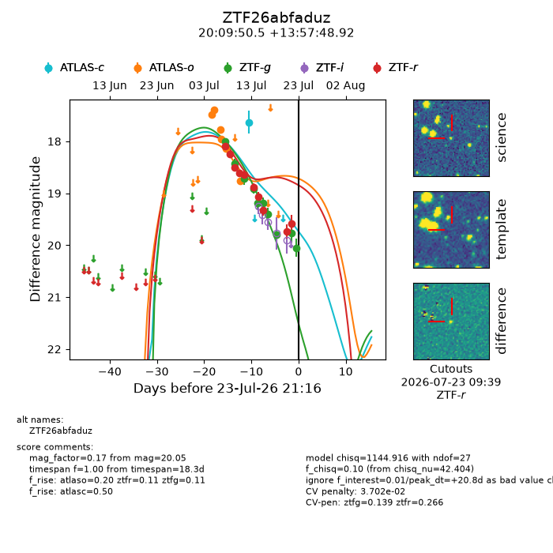
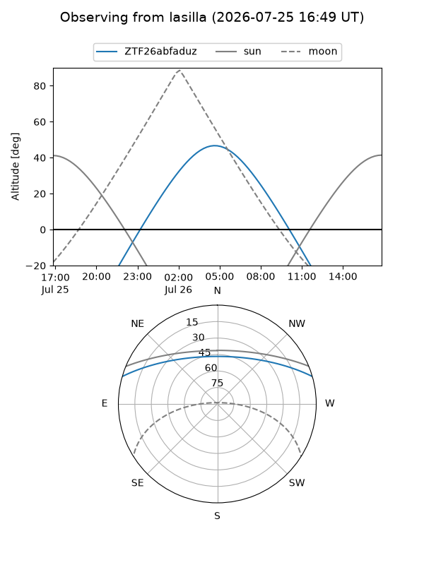
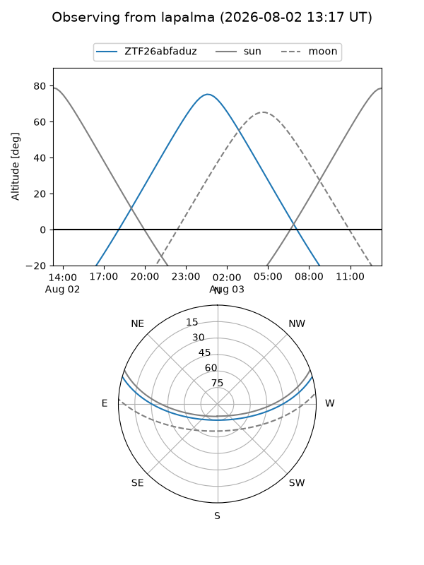
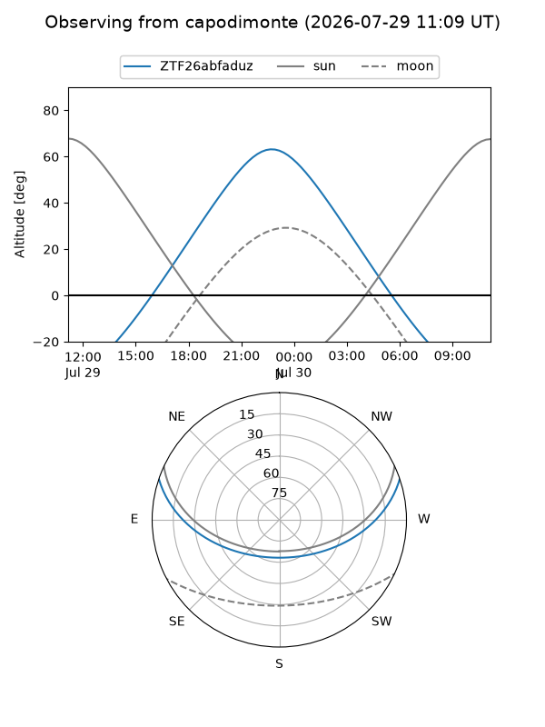
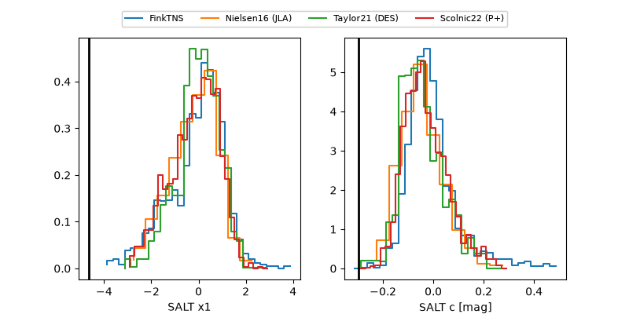

ZTF26abfaduz
Target ZTF26abfaduz at 2026-07-23 21:19
Aliases and brokers:
FINK-ZTF: ztf.fink-portal.org/ZTF26abfaduz
Lasair-ZTF: lasair-ztf.lsst.ac.uk/objects/ZTF26abfaduz
ALeRCE-ZTF: alerce.online/object/ZTF26abfaduz
Direct TNS query: direct search
alt names
ZTF26abfaduz (ztf,fink_ztf)
Coordinates:
equatorial (ra, dec) = 302.4604,+13.96359
equatorial (HMS+DMS) = 20:09:50.50,+13:57:48.92
galactic (l, b) = (54.5993,-10.35274)
Flags:
peak dt: +20.8
likely cv: !!
Photometry:
last atlasc=17.63, atlaso=18.76, ztfg=20.05, ztfr=19.59
1 atlasc, 6 atlaso, 10 ztfg, 10 ztfr detections
Lightcurve

Visibility



Additional plots
